F5-based pxGrid Gateway
Cisco ISE publishes its SGT-to-IP (SXP) bindings through the pxGrid REST API. The getBindings call is a POST with an empty JSON body and requires a client certificate, so many tools, such as firewalls with external feeds, scripts and dashboards, cannot consume it directly.
An F5 BIG-IP can sit in front of ISE and turn it into something much simpler:
- The client sends a plain
GETwith HTTP Basic credentials. - The BIG-IP validates the credentials, calls ISE using the pxGrid client certificate, and filters the answer.
- The client receives a bare, newline-separated list of IP addresses that carry a specific SGT (tag
255in this example).
This post walks through the full configuration in both the GUI and the CLI (tmsh). It targets BIG-IP LTM version 11.x, so the iRule avoids newer commands such as JSON::parse.
How it works
sequenceDiagram
participant C as Client
participant B as BIG-IP VIP (:8910)
participant I as ISE pxGrid (:8910)
C->>B: GET + Basic auth
Note over B: 1. Validate credentials (data group)
Note over B: 2. Forward probe (no client credentials)
B->>I: GET (probe)
I-->>B: Response (ignored)
Note over B: 3. HTTP::retry as POST {} + client cert
B->>I: POST {}
I-->>B: JSON bindings
Note over B: 4. Keep ipPrefix where tag == 255
B-->>C: text/plain list of IPs
HTTP::retry is only valid in response events, so the iRule cannot rewrite the original request into a POST directly. Instead, the first (authenticated) request is allowed to reach ISE as a throwaway probe. When its response arrives, the iRule replaces it with the real POST request. ISE ignores the probe, and the client never sees its result.
Prerequisites
- BIG-IP LTM (version 11.x or later) with a self IP that can reach the ISE pxGrid nodes on TCP/8910.
- A certificate and key for the VIP (PEM format).
- A pxGrid client certificate and key (PEM format) that ISE trusts.
- On ISE:
- The pxGrid and SXP service is enabled on a node.
- The CA that signed the client certificate is in the ISE trusted certificates.
- The pxGrid client is approved (Administration > pxGrid Services > Client Management > Clients) and allowed to use the SXP service.
Values used in this post (replace with your own):
| Item | Value |
|---|---|
| ISE pxGrid nodes | ise-1 (192.0.2.50), ise-2 (192.0.2.51) |
| BIG-IP VIP | 192.0.2.10:8910 |
| VIP certificate and key (imported as) | pxgrid-vip |
| pxGrid client certificate and key (imported as) | pxgrid |
| Client SSL profile | pxgrid-vip |
| Server SSL profile | pxgrid |
| Pool | pxgrid_pool |
| Data group | pxgrid_users |
| iRule | sxp_bindings_get |
| Virtual server | vs_sxp_bindings_8910 |
| Feed user | pxgrid |
ISE configuration
ISE publishes SXP bindings through pxGrid only when the pxGrid and SXP services are running, the pxGrid account is activated, at least one SXP peer exists and endpoints are assigned an SGT. Complete the following steps on ISE before configuring the BIG-IP.
ISE Step 1: Enable the pxGrid and SXP services
- Go to Administration > System > Deployment and edit an ISE node.
- Under Policy Service, select Enable SXP Service and choose the interface that SXP uses.
- Scroll down and turn on the pxGrid toggle.
- Click Save, and repeat for each ISE node that should run these services (
ise-1andise-2in this post).
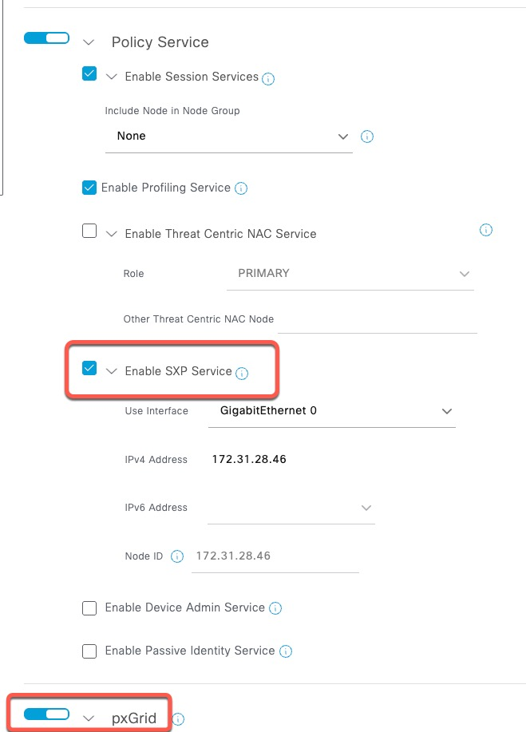
ISE Step 2: Allow automatic approval of certificate-based accounts
The BIG-IP authenticates to pxGrid with a client certificate. Enable automatic approval so the account is approved as soon as it is activated.
- Go to Administration > pxGrid Services > Settings.
- Enable Automatically approve new certificate-based accounts.
- Click Save.

ISE Step 3: Activate the pxGrid account
Activate the account by calling the pxGrid AccountActivate endpoint with the pxGrid client certificate:
curl -kv "https://ise.example.com:8910/pxgrid/control/AccountActivate" \
--cert pxgrid.cer \
--key pxgrid.key \
-u "pxgrid-client1:none" \
-H "Content-Type: application/json" \
-H "Accept: application/json" \
-d '{}'
The username in the
-uoption must match the user name set in the iRule (static::pxgrid_user). The password is ignored for certificate-based accounts, but the field must still be present.
A successful call returns "accountState":"ENABLED". The client now appears under Administration > pxGrid Services > Client Management > Clients.
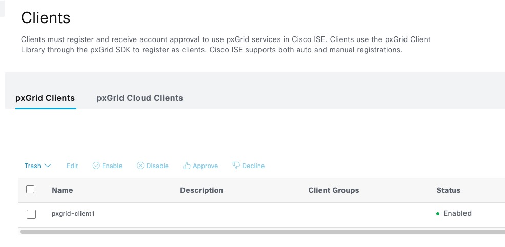
ISE Step 4: Create an SXP peer
ISE publishes SXP bindings to pxGrid only if at least one SXP peer is configured. The peer does not need to connect, so any IP address can be used.
- Go to Work Centers > TrustSec > SXP > SXP Devices and click Add.
- Enter a name, for example
dummy, and the IP address1.2.3.4. - Set Peer Role to Listener, select the ISE nodes under Connected PSNs, and set SXP Domain to
default. - Leave Password Type at Default and set Version to V4.
- Click Save.
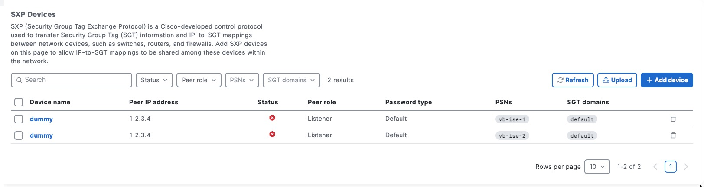
The peer shows a red status icon because it is not connected. This is expected.
ISE Step 5: Assign the Quarantined_Systems SGT in the authorization policy
The iRule returns the addresses that carry tag 255, which is the default Quarantined_Systems SGT in ISE.
- Go to Policy > Policy Sets and open the policy set that matches your endpoints.
- Expand Authorization Policy and edit the rule that should quarantine endpoints, or create a new one.
- Under Results > Security Groups, select
Quarantined_Systems. - Click Save.

Endpoints that match this rule are assigned SGT 255, and their IP addresses appear in the getBindings output.
Step 1: Verify the ISE API directly
Before configuring anything on the BIG-IP, confirm that the pxGrid client certificate works:
curl -k --cert pxgrid.cer --key pxgrid.key \
-X POST \
-H "Content-Type: application/json" \
-H "Accept: application/json" \
-d '{}' \
https://ise.example.com:8910/pxgrid/ise/sxp/getBindings
A successful call returns JSON in the following format:
{
"bindings": [
{
"ipPrefix": "172.16.2.103/32",
"tag": 255,
"source": "172.31.2.20",
"peerSequence": "172.31.28.46,172.31.2.20",
"vpn": "default",
"timestamp": "2026-09-24T16:36:14.896Z",
"type": "Session"
},
{
"ipPrefix": "172.16.2.106/32",
"tag": 15,
"source": "172.31.2.20",
"peerSequence": "172.31.28.46,172.31.2.20",
"vpn": "default",
"timestamp": "2026-09-24T16:36:14.889Z",
"type": "Session"
}
]
}
Our goal is to return only 172.16.2.103, the address whose tag is 255.
Step 2: Import the certificates and keys
Two certificate and key pairs are needed:
- The VIP certificate is presented to clients connecting to the BIG-IP.
- The pxGrid client certificate is presented by the BIG-IP to ISE.
GUI
- Go to System > File Management > SSL Certificate List > Import.
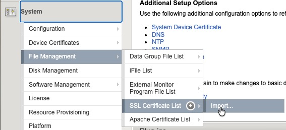
- Set Import Type to Key, select Create New, enter the key name
pxgrid-vip, choose Upload File and select the VIP key file (vip.key). Click Import.
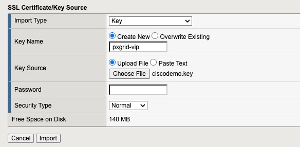
- Repeat with Import Type set to Certificate, the certificate name
pxgrid-vipand the VIP certificate file (vip.cer).
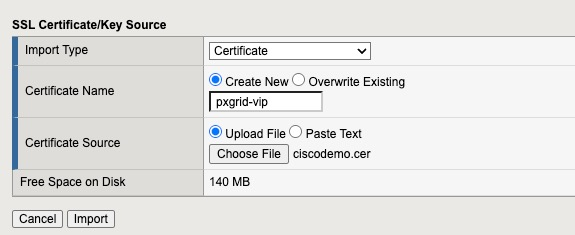
- Import the pxGrid client key (
pxgrid.key) with the namepxgrid.
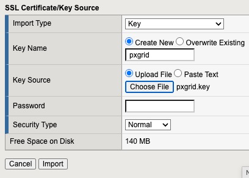
- Import the pxGrid client certificate (
pxgrid.cer) with the namepxgrid.
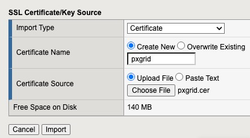
The SSL Certificate List now shows both pxgrid-vip and pxgrid.
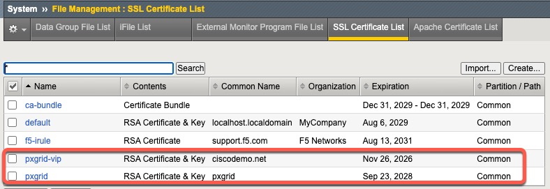
CLI
Copy the four files to /var/tmp on the BIG-IP, then run:
tmsh install sys crypto key pxgrid-vip from-local-file /var/tmp/vip.key
tmsh install sys crypto cert pxgrid-vip from-local-file /var/tmp/vip.cer
tmsh install sys crypto key pxgrid from-local-file /var/tmp/pxgrid.key
tmsh install sys crypto cert pxgrid from-local-file /var/tmp/pxgrid.cer
Step 3: Create the SSL profiles
The client SSL profile terminates TLS from clients using the VIP certificate. The server SSL profile presents the pxGrid client certificate to ISE.
GUI
- Go to Local Traffic > Profiles > SSL > Client and click the + icon.
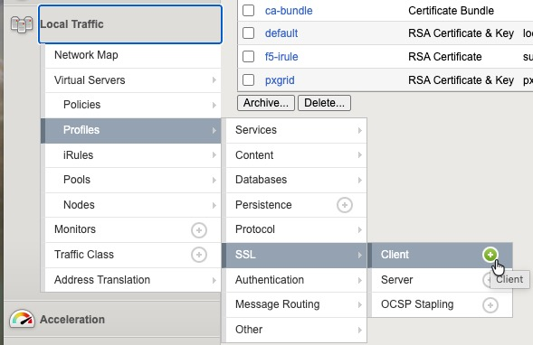
- Enter the name
pxgrid-vipand keep the parent profileclientssl. - Tick the Custom box, set Certificate, Key and Chain to
pxgrid-vip, and click Add. Then click Finished.
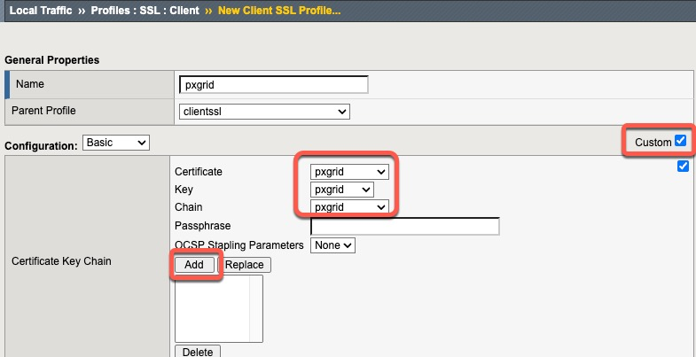
- Go to Local Traffic > Profiles > SSL > Server and click the + icon.
- Enter the name
pxgridand keep the parent profileserverssl. - Tick the Custom box, then set Certificate and Key to
pxgrid. Leave Server Authentication at its default (no CA bundle), so the ISE certificate is not validated. Click Finished.
This lab configuration does not validate the ISE server certificate. For production, import the ISE CA certificate and configure the profile to authenticate the server.
CLI
tmsh create ltm profile client-ssl pxgrid-vip defaults-from clientssl \
cert pxgrid-vip key pxgrid-vip chain pxgrid-vip
tmsh create ltm profile server-ssl pxgrid defaults-from serverssl \
cert pxgrid key pxgrid
Step 4: Create the ISE pool
GUI
- Go to Local Traffic > Pools > Pool List and click Create.
- Enter the name
pxgrid_pooland move thetcphealth monitor to Active. Leave the load balancing method at Round Robin. - Under Resources, select New Node, enter the node name
ise-1, the address192.0.2.50and the service port8910, then click Add. - Repeat for the second ISE node:
ise-2,192.0.2.51, port8910. - Click Finished.
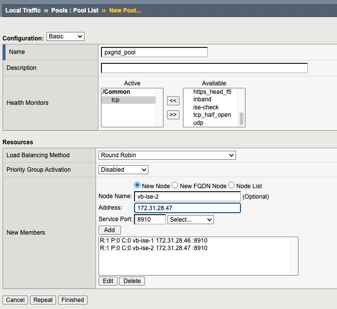
CLI
tmsh create ltm pool pxgrid_pool monitor tcp members add { 192.0.2.50:8910 192.0.2.51:8910 }
Step 5: Create the credentials data group
The iRule checks the Basic credentials against an internal string data group. Each record uses the username as the key and the SHA-256 hash of the password as the value, so no plaintext password is stored in the configuration.
Generate the hash on the BIG-IP shell (or any Linux host):
printf '%s' 'ChangeMe-Str0ngPassw0rd' | sha256sum
On macOS, use shasum -a 256 instead of sha256sum.
GUI
- Go to Local Traffic > iRules > Data Group List and click Create.
- Enter the name
pxgrid_usersand set Type to String. - Under String Records, set String to
pxgridand Value to the hash, then click Add. - Click Finished.
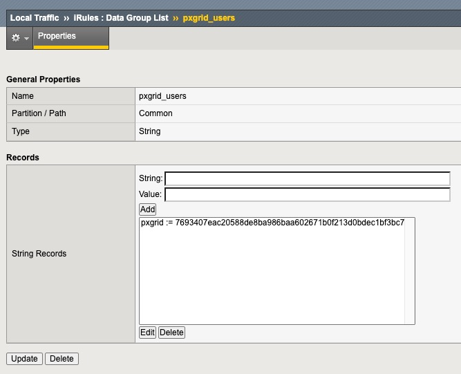
CLI
tmsh create ltm data-group internal pxgrid_users type string \
records add { pxgrid { data <sha256-hash-of-password> } }
To add more users later:
tmsh modify ltm data-group internal pxgrid_users \
records add { another-user { data <sha256-hash> } }
Step 6: Create the iRule
when RULE_INIT {
# ISE host header and API path
set static::ise_host "ise.example.com:8910"
set static::ise_path "/pxgrid/ise/sxp/getBindings"
set static::pxgrid_user "pxgrid-client1"
# Certificate-based pxGrid account: the password is ignored, but the header is still sent
set static::ise_auth "Basic [b64encode "${static::pxgrid_user}:none"]"
}
when CLIENT_ACCEPTED {
# 0 = idle, 1 = probe sent to ISE, 2 = POST sent to ISE
set sxp_state 0
}
when HTTP_REQUEST {
# The POST generated by HTTP::retry re-enters this event; let it through
if { $sxp_state == 2 } {
return
}
if { [HTTP::method] ne "GET" } {
HTTP::respond 405 content "Method not allowed\n" Content-Type "text/plain" Allow "GET" Connection "Close"
return
}
# Validate Basic credentials against the pxgrid_users data group
set authorized 0
set auth [HTTP::header value Authorization]
if { [string tolower [lindex $auth 0]] eq "basic" && [catch { b64decode [lindex $auth 1] } creds] == 0 } {
set idx [string first ":" $creds]
if { $idx > 0 } {
set user [string range $creds 0 [expr { $idx - 1 }]]
set pass [string range $creds [expr { $idx + 1 }] end]
set stored [class match -value $user equals pxgrid_users]
binary scan [sha256 $pass] H* digest
if { $stored ne "" && [string tolower $stored] eq $digest } {
set authorized 1
}
}
}
if { !$authorized } {
HTTP::respond 401 content "Unauthorized\n" Content-Type "text/plain" WWW-Authenticate {Basic realm="SXP Bindings"} Connection "Close"
return
}
# Never forward the client's credentials to ISE
HTTP::header remove Authorization
# The request that will replace the probe once ISE answers it
set post_req "POST $static::ise_path HTTP/1.1\r\nHost: $static::ise_host\r\nAuthorization: $static::ise_auth\r\nContent-Type: application/json\r\nAccept: application/json\r\nContent-Length: 2\r\n\r\n{}"
set sxp_state 1
}
when HTTP_RESPONSE {
# First response is for the probe: discard it and send the real POST
if { $sxp_state == 1 } {
set sxp_state 2
HTTP::retry $post_req
return
}
if { $sxp_state == 2 } {
# Pass ISE HTTP errors back to the client
if { [HTTP::status] != 200 } {
set sxp_state 0
HTTP::respond [HTTP::status] content "ISE returned HTTP [HTTP::status]\n" Content-Type "text/plain"
return
}
if { [HTTP::header exists Content-Length] && [HTTP::header Content-Length] == 0 } {
set sxp_state 0
HTTP::respond 200 content "" Content-Type "text/plain"
return
}
if { [HTTP::header exists Content-Length] } {
HTTP::collect [HTTP::header Content-Length]
} else {
HTTP::collect 1048576
}
}
}
when HTTP_RESPONSE_DATA {
set sxp_state 0
set ips {}
# Each binding is a flat object, so splitting on "\}" gives one binding per element
foreach obj [split [HTTP::payload] "\}"] {
# Change 255 to select a different tag
if { [regexp {"tag"\s*:\s*255\y} $obj] && [regexp {"ipPrefix"\s*:\s*"([^"]+)"} $obj match prefix] } {
regsub {/(32|128)$} $prefix "" ip
lappend ips $ip
}
}
set body ""
if { [llength $ips] } {
set body "[join $ips "\n"]\n"
}
HTTP::respond 200 content $body Content-Type "text/plain"
}
How it works:
| Event | Purpose |
|---|---|
HTTP_REQUEST | Accepts only GET, validates the Basic credentials (SHA-256 comparison against the data group), removes the client’s Authorization header and builds the POST {} request with the pxGrid account’s own Authorization header. |
HTTP_RESPONSE | Replaces the probe response with the real POST using HTTP::retry. Passes any non-200 status from ISE back to the client and collects the JSON body on success. |
HTTP_RESPONSE_DATA | Parses the JSON with split and regexp, keeps the bindings with tag 255, removes the /32 (or /128) suffix and returns the list as text/plain. If nothing matches, the client receives an empty 200 response. |
The parsing does not depend on the order of fields within each binding, nor on whitespace in the JSON.
GUI
- Go to Local Traffic > iRules > iRule List and click Create.
- Enter the name
sxp_bindings_get, paste the iRule into the Definition box, and click Finished.
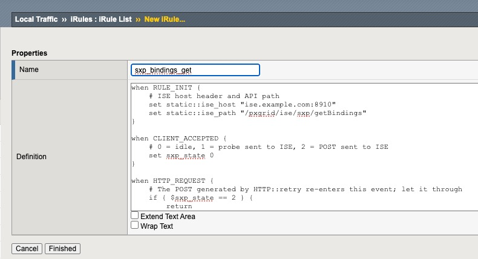
CLI
Save the iRule to /var/tmp/sxp_bindings_get.tcl on the BIG-IP, then run:
tmsh create ltm rule sxp_bindings_get from-file /var/tmp/sxp_bindings_get.tcl
If from-file is not available on your version, create the rule with tmsh edit ltm rule sxp_bindings_get and paste the definition in the editor.
Step 7: Create the virtual server
GUI
- Go to Local Traffic > Virtual Servers > Virtual Server List and click Create.
- Enter the name
vs_sxp_bindings_8910, set Type to Standard, Destination Address to192.0.2.10and Service Port to8910. - Set Protocol to
TCP, Protocol Profile (Client) totcpand HTTP Profile tohttp. - Move
pxgrid-vipto Selected for SSL Profile (Client) andpxgridto Selected for SSL Profile (Server). - Set Source Address Translation to Auto Map.
- Under Resources, assign
sxp_bindings_getto iRules and set Default Pool topxgrid_pool. - Click Finished.
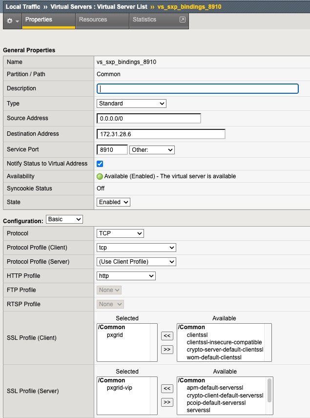
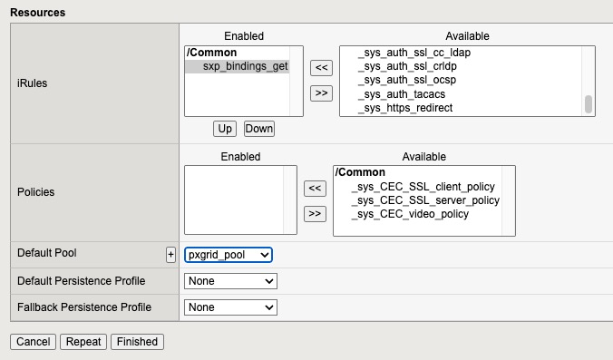
CLI
tmsh create ltm virtual vs_sxp_bindings_8910 \
destination 192.0.2.10:8910 \
ip-protocol tcp \
profiles add { tcp http pxgrid-vip { context clientside } pxgrid { context serverside } } \
source-address-translation { type automap } \
pool pxgrid_pool \
rules { sxp_bindings_get }
tmsh save sys config
Step 8: Test
Without credentials, the VIP returns 401:
curl -k -i https://192.0.2.10:8910/
HTTP/1.1 401 Unauthorized
WWW-Authenticate: Basic realm="SXP Bindings"
With valid credentials, the VIP returns the list:
curl -k -u pxgrid:'ChangeMe-Str0ngPassw0rd' https://192.0.2.10:8910/
172.16.2.103
Only 172.16.2.103 is returned for the sample data. 172.16.2.106 carries tag 15, so it is filtered out.
Troubleshooting
401with correct credentials: the stored hash does not match. Make sure the hash was generated without a trailing newline (printf '%s', notecho) and is entered in the data group exactly as produced.502,503or connection reset: check pool member status and confirm the BIG-IP can reach ISE on TCP/8910. Also check that the server SSL profile has the correct pxGrid client certificate and key.401or403from ISE: the pxGrid client is not approved, or the certificate is not trusted by ISE. The iRule passes the ISE status code back to the client.- Empty result when bindings exist: confirm the tag in the iRule matches the SGT in ISE, and run the direct
curlcall from Step 1 to look at the raw response. - iRule debugging: add
log local0. "state=$sxp_state status=[HTTP::status]"lines and watch/var/log/ltm. Remove them when finished, as high-volume logging affects performance.
Notes
- The probe request means ISE receives one extra
GETfor each client request. It is rejected by ISE and is harmless, but it can appear in ISE logs. - Basic credentials are only protected in transit by the client SSL profile. Do not publish this VIP over plain HTTP.
- The
sha256andclass match -valueiRule commands and thefrom-fileoption are expected to be available on 11.x, but verify them on your exact version. - For authentication beyond a static list of users (LDAP, RADIUS, rate limiting), consider moving the credential check to APM.